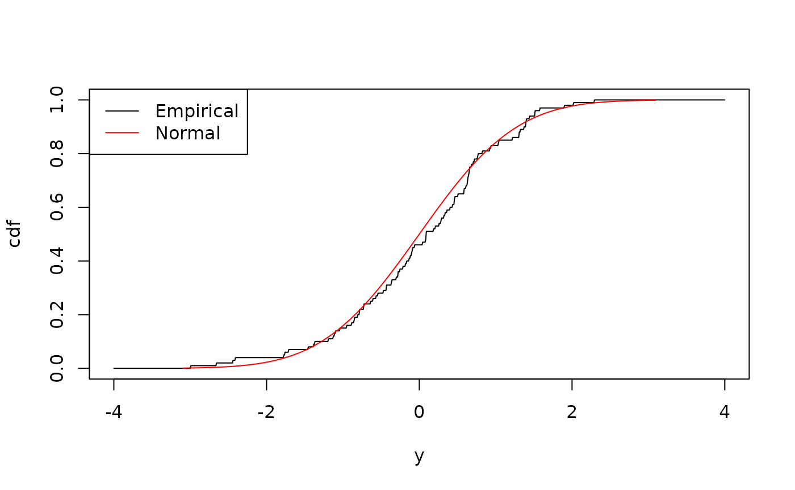

This vignette covers built-in distribution families available in
distionary. It provides insight into each family and its
counterparts in the stats package.
Built-In Distribution Families
All distribution families found in the stats package are
integrated into distionary, along with a few others. They
are shown in the table below with notes on whether they have
counterparts in the stats package.
| Distribution |
distionary Function |
Has counterpart in stats
|
|---|---|---|
| Bernoulli | dst_bern() |
Yes |
| Beta | dst_beta() |
Yes |
| Binomial | dst_binom() |
Yes |
| Cauchy | dst_cauchy() |
Yes |
| Chi Squared | dst_chisq() |
Yes |
| Degenerate | dst_degenerate() |
No |
| Exponential | dst_exp() |
Yes |
| Empirical | dst_empirical() |
No |
| F | dst_f() |
Yes |
| Finite | dst_finite() |
No |
| Gamma | dst_gamma() |
Yes |
| Geometric | dst_geom() |
Yes |
| Generalised Extreme Value (GEV) | dst_gev() |
No |
| Gumbel | dst_gumbel() |
No |
| Generalised Pareto (GP) | dst_gp() |
No |
| Hypergeometric | dst_hyper() |
Yes |
| Log Normal | dst_lnorm() |
Yes |
| Log Pearson Type III | dst_lp3() |
No |
| Negative Binomial | dst_nbinom() |
Yes |
| Normal | dst_norm() |
Yes |
| Pearson Type III | dst_pearson3() |
No |
| Poisson | dst_pois() |
Yes |
| Student t | dst_t() |
Yes |
| Uniform | dst_unif() |
Yes |
| Weibull | dst_weibull() |
Yes |
In addition, there is a special “Null” distribution object akin to a missing or unknown distribution. This is useful, for example, if an algorithm fails to return a distribution: instead of throwing an error, a Null distribution can be returned.
# Make a Null distribution.
null <- dst_null()
# Inspect
null
#> Null distribution (NA)This is the behaviour when specifying NA as a
distribution parameter:
dst_norm(mean = 0, sd = NA)
#> Null distribution (NA)The Null distribution always evaluates to NA.
The Empirical Distribution
The Empirical distribution is different from the others in terms of its utility because it makes your data the distribution, and is therefore far more flexible than any of the other distributions.
In statistical terminology, this is because the other built-in distributions are parametric, defined by a fixed amount of numeric parameters. For example, exactly two parameters make up the family of Normal distributions. The empirical distribution, on the other hand, is a non-parametric model, because there isn’t a fixed number of numeric parameters that can describe it.
The Empirical distribution is particularly advantageous when a distribution’s standard form is unknown or infeasible to model, or when comparing a custom model against data is needed.
Here is an example of forming an empirical distribution from a dataset generated from a Normal distribution. First, define the normal distribution and generate a sample; the first few observations are shown below.
set.seed(42)
normal <- dst_norm(0, 1)
x <- realise(normal, n = 100)
# Inspect the first few observations
head(x)
#> [1] 1.3709584 -0.5646982 0.3631284 0.6328626 0.4042683 -0.1061245An Empirical distribution can be made from these values.
empirical <- dst_empirical(x)
# Inspect
empirical
#> Finite distribution (discrete)
#> --Parameters--
#> # A tibble: 100 × 2
#> outcomes probs
#> <dbl> <dbl>
#> 1 -2.99 0.01
#> 2 -2.66 0.01
#> 3 -2.44 0.01
#> 4 -2.41 0.01
#> 5 -1.78 0.01
#> 6 -1.76 0.01
#> 7 -1.72 0.01
#> 8 -1.46 0.01
#> 9 -1.39 0.01
#> 10 -1.37 0.01
#> # ℹ 90 more rowsComparing its CDF to the normal distribution, one can see the two are similar:
plot(empirical, "cdf", from = -4, to = 4, n = 1000)
plot(normal, "cdf", add = TRUE, col = "red")
legend(
"topleft",
legend = c("Empirical", "Normal"),
col = c("black", "red"),
lty = 1
)
Although this distribution is non-parametric, the
parameters() function is still applicable because it’s not
tied to the statistical definition of “parametric”, which is concerned
with parameter dimension. In distionary, the dataset itself
and their probabilities comprise the distribution parameters (using
str() here for better printing):
str(parameters(empirical))
#> List of 2
#> $ outcomes: num [1:100] -2.99 -2.66 -2.44 -2.41 -1.78 ...
#> $ probs : num [1:100] 0.01 0.01 0.01 0.01 0.01 0.01 0.01 0.01 0.01 0.01 ...One should also note that Empirical distributions are discrete, with outcomes defined by the observed values:
vtype(empirical)
#> [1] "discrete"